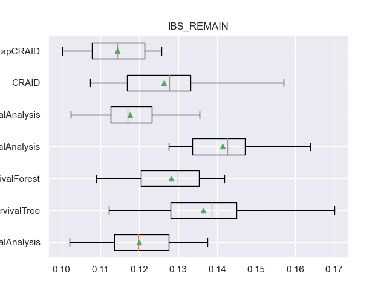
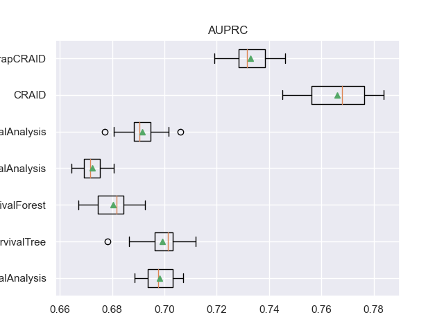

Note
Go to the end to download the full example code
Experiments guide
# Author: Iulii Vasilev <iuliivasilev@gmail.com>
#
# License: BSD 3 clause
First, we will import modules
import numpy as np
import pandas as pd
import matplotlib.pyplot as plt
import seaborn as sns
sns.set()
Create Experiments instance
- The dataset is represented as a tuple:
X (pd.DataFrame): Feature space
y (structured np.ndarray): Target variables
features (list): Covariates
categ (list): Categorical covariates
Metrics are defined according to the metrics module (keys of METRIC_DICT dictionary)
- Creating Experiments specify:
folds (int): Quantity of cross-validate folds
mode (str): Validation strategy.
Available modes: “CV”, “CV+HOLD-OUT”, “CV+SAMPLE”, “TIME-CV”. In this case, five-fold cross-validation is performed followed by training the best models on 20 different samples of the original data. The final quality is defined as the average quality over 20 samples.
Methods for adding metrics (set_metrics), metrics for selecting the best models (add_metric_best) are used to control the experiment.
from survivors.experiments import grid as exp
import survivors.datasets as ds
l_metrics = ["CI", "CI_CENS", "IBS", "IBS_REMAIN", "IAUC", "IAUC_WW_TI", "AUPRC"]
X, y, features, categ, _ = ds.load_pbc_dataset()
experim = exp.Experiments(folds=5, mode="CV+SAMPLE")
experim.set_metrics(l_metrics)
experim.add_metric_best("IBS_REMAIN")
To add models, the add_method method is used with two parameters: model class and hyperparameter grid.
Add models from external libraries
Experiments support models from the external scikit-survival library. For each model a grid of hyperparameters is defined.
from sksurv.linear_model import CoxPHSurvivalAnalysis
from sksurv.tree import SurvivalTree
from sksurv.ensemble import RandomSurvivalForest
from sksurv.ensemble import GradientBoostingSurvivalAnalysis
from sksurv.ensemble import ComponentwiseGradientBoostingSurvivalAnalysis
COX_param_grid = {
'alpha': [100, 10, 1, 0.1, 0.01, 0.001],
'ties': ["breslow"]
}
RSF_param_grid = {
'n_estimators': [50],
'max_depth': [None, 20],
'min_samples_leaf': [0.001, 0.01, 0.1, 0.25],
"random_state": [123]
}
ST_param_grid = {
'max_depth': [None, 20, 30],
'min_samples_leaf': [1, 10, 20],
'max_features': [None, "sqrt"],
"random_state": [123]
}
GBSA_param_grid = {
'loss': ["coxph"],
'learning_rate': [0.01, 0.05, 0.1, 0.5],
'n_estimators': [50],
'min_samples_leaf': [1, 10, 50, 100],
'max_features': ["sqrt"],
"random_state": [123]
}
CWGBSA_param_grid = {
'loss': ["coxph"],
'learning_rate': [0.01, 0.05, 0.1, 0.5],
'n_estimators': [30, 50],
'subsample': [0.7, 1.0],
'dropout_rate': [0.0, 0.1, 0.5],
"random_state": [123]
}
experim.add_method(CoxPHSurvivalAnalysis, COX_param_grid)
experim.add_method(SurvivalTree, ST_param_grid)
experim.add_method(RandomSurvivalForest, RSF_param_grid)
experim.add_method(ComponentwiseGradientBoostingSurvivalAnalysis, CWGBSA_param_grid)
experim.add_method(GradientBoostingSurvivalAnalysis, GBSA_param_grid)
Add embedded AFT models (optional)
Some models of the external lifelines library (CoxPH, AFT, KaplanMeier, NelsonAalen) are also embedded in the library.
Note that these models can be used in tree sheets to build stratified models.
To add your own model, you can use LeafModel wrapper from the external.leaf_model module.
from survivors.external import LogNormalAFT, AFT_param_grid
# experim.add_method(LogNormalAFT, AFT_param_grid)
Add models from “survivors”
Of course, the experiments support models from survivors:
CRAID: a survival tree with weighted criteria, regularisation and complex non-parametric models.
BootstrapCRAID: ensemble of independent trees on bootstrap samples.
ParallelBootstrapCRAID: a parallel implementation of BootstrapCRAID.
BoostingCRAID: adaptive bootstrapping with weighting of observations by probability of hitting the next subsample and correction based on base model error.
from survivors.tree import CRAID
from survivors.ensemble import ParallelBootstrapCRAID, BoostingCRAID
CRAID_param_grid = {
"depth": [10],
"criterion": ["wilcoxon", "logrank"],
"l_reg": [0, 0.01, 0.1, 0.5],
"min_samples_leaf": [0.05, 0.01, 0.001],
"signif": [0.1, 1.0],
"categ": [categ]
}
BSTR_param_grid = {
"n_estimators": [50],
"depth": [7],
"size_sample": [0.3, 0.7],
"l_reg": [0, 0.01, 0.1, 0.5],
"criterion": ["tarone-ware", "wilcoxon"],
"min_samples_leaf": [0.05, 0.01],
"ens_metric_name": ["IBS_REMAIN"],
"max_features": ["sqrt"],
"categ": [categ]
}
experim.add_method(CRAID, CRAID_param_grid)
experim.add_method(ParallelBootstrapCRAID, BSTR_param_grid)
Run experiments
- To run experiments, use the run_effective method with the source data and:
verbose (int): log printing parameter.
stratify_best (str/list): one or more hyperparameters on which to build independent best models (for each hyperparameter value).
Execution may take some time.
- Experimental results can be obtained by calling methods:
get_result: dataframe of results at the cross-validation stage.
get_best_by_mode method: dataframe of model validation at 20 samples.
experim.run_effective(X, y, verbose=0, stratify_best=[])
df_results = experim.get_result()
<class 'sksurv.linear_model.coxph.CoxPHSurvivalAnalysis'> {'alpha': [100, 10, 1, 0.1, 0.01, 0.001], 'ties': ['breslow']}
<class 'sksurv.tree.tree.SurvivalTree'> {'max_depth': [None, 20, 30], 'min_samples_leaf': [1, 10, 20], 'max_features': [None, 'sqrt'], 'random_state': [123]}
<class 'sksurv.ensemble.forest.RandomSurvivalForest'> {'n_estimators': [50], 'max_depth': [None, 20], 'min_samples_leaf': [0.001, 0.01, 0.1, 0.25], 'random_state': [123]}
<class 'sksurv.ensemble.boosting.ComponentwiseGradientBoostingSurvivalAnalysis'> {'loss': ['coxph'], 'learning_rate': [0.01, 0.05, 0.1, 0.5], 'n_estimators': [30, 50], 'subsample': [0.7, 1.0], 'dropout_rate': [0.0, 0.1, 0.5], 'random_state': [123]}
<class 'sksurv.ensemble.boosting.GradientBoostingSurvivalAnalysis'> {'loss': ['coxph'], 'learning_rate': [0.01, 0.05, 0.1, 0.5], 'n_estimators': [50], 'min_samples_leaf': [1, 10, 50, 100], 'max_features': ['sqrt'], 'random_state': [123]}
<class 'survivors.tree.decision_tree.CRAID'> {'depth': [10], 'criterion': ['wilcoxon', 'logrank'], 'l_reg': [0, 0.01, 0.1, 0.5], 'min_samples_leaf': [0.05, 0.01, 0.001], 'signif': [0.1, 1.0], 'categ': [['trt', 'sex', 'ascites', 'hepato', 'spiders']]}
<class 'survivors.ensemble.bootstrap.ParallelBootstrapCRAID'> {'n_estimators': [50], 'depth': [7], 'size_sample': [0.3, 0.7], 'l_reg': [0, 0.01, 0.1, 0.5], 'criterion': ['tarone-ware', 'wilcoxon'], 'min_samples_leaf': [0.05, 0.01], 'ens_metric_name': ['IBS_REMAIN'], 'max_features': ['sqrt'], 'categ': [['trt', 'sex', 'ascites', 'hepato', 'spiders']]}
<class 'sksurv.linear_model.coxph.CoxPHSurvivalAnalysis'> {'alpha': [10], 'ties': ['breslow']}
Iteration: 1/1
EXECUTION TIME OF CoxPHSurvivalAnalysis: [0.285 0.285 0.285 0.285 0.283 0.286 0.283 0.286 0.281 0.283 0.285 0.288
0.282 0.284 0.28 0.284 0.283 0.278 0.283 0.285], MEM [0.098 0. 0. 0. 0. 0. 0. 0. 0. 0. 0. 0.
0. 0. 0. 0. 0. 0. 0. 0. ] {'CI': [0.678, 0.667], 'CI_CENS': [0.813, 0.796], 'IBS': [0.127, 0.133], 'IBS_REMAIN': [0.12, 0.132], 'IAUC': [0.82, 0.794], 'IAUC_WW_TI': [0.862, 0.818], 'AUPRC': [0.698, 0.702]}
<class 'sksurv.tree.tree.SurvivalTree'> {'max_depth': [None], 'max_features': [None], 'min_samples_leaf': [20], 'random_state': [123]}
Iteration: 1/1
EXECUTION TIME OF SurvivalTree: [0.252 0.253 0.253 0.258 0.253 0.253 0.252 0.253 0.253 0.253 0.254 0.254
0.25 0.252 0.254 0.254 0.254 0.253 0.252 0.252], MEM [0. 0.004 0. 0. 0. 0. 0. 0. 0. 0. 0. 0.
0. 0. 0. 0. 0. 0. 0. 0. ] {'CI': [0.655, 0.668], 'CI_CENS': [0.78, 0.816], 'IBS': [0.145, 0.124], 'IBS_REMAIN': [0.136, 0.12], 'IAUC': [0.781, 0.848], 'IAUC_WW_TI': [0.825, 0.877], 'AUPRC': [0.699, 0.709]}
<class 'sksurv.ensemble.forest.RandomSurvivalForest'> {'max_depth': [None], 'min_samples_leaf': [0.01], 'n_estimators': [50], 'random_state': [123]}
Iteration: 1/1
EXECUTION TIME OF RandomSurvivalForest: [0.4 0.401 0.405 0.408 0.398 0.405 0.41 0.402 0.409 0.399 0.406 0.398
0.407 0.398 0.402 0.404 0.415 0.398 0.402 0.405], MEM [1.6125e+01 2.4380e+00 0.0000e+00 1.2000e-02 7.6600e-01 0.0000e+00
5.5000e-02 0.0000e+00 0.0000e+00 0.0000e+00 4.0000e-03 0.0000e+00
2.4738e+01 1.2150e+00 7.8900e-01 3.0500e-01 1.2000e-02 1.1300e-01
0.0000e+00 9.4000e-02] {'CI': [0.661, 0.663], 'CI_CENS': [0.811, 0.805], 'IBS': [0.131, 0.128], 'IBS_REMAIN': [0.128, 0.139], 'IAUC': [0.809, 0.84], 'IAUC_WW_TI': [0.852, 0.857], 'AUPRC': [0.68, 0.681]}
<class 'sksurv.ensemble.boosting.ComponentwiseGradientBoostingSurvivalAnalysis'> {'dropout_rate': [0.0], 'learning_rate': [0.5], 'loss': ['coxph'], 'n_estimators': [50], 'random_state': [123], 'subsample': [1.0]}
Iteration: 1/1
EXECUTION TIME OF ComponentwiseGradientBoostingSurvivalAnalysis: [0.288 0.29 0.289 0.291 0.289 0.292 0.293 0.291 0.29 0.288 0.289 0.289
0.287 0.289 0.29 0.289 0.29 0.289 0.289 0.293], MEM [0.004 0. 0. 0. 0. 0. 0. 0. 0. 0. 0. 0.
0. 0. 0. 0. 0. 0. 0. 0. ] {'CI': [0.665, 0.665], 'CI_CENS': [0.796, 0.761], 'IBS': [0.143, 0.149], 'IBS_REMAIN': [0.141, 0.164], 'IAUC': [0.803, 0.8], 'IAUC_WW_TI': [0.843, 0.826], 'AUPRC': [0.672, 0.671]}
<class 'sksurv.ensemble.boosting.GradientBoostingSurvivalAnalysis'> {'learning_rate': [0.1], 'loss': ['coxph'], 'max_features': ['sqrt'], 'min_samples_leaf': [1], 'n_estimators': [50], 'random_state': [123]}
Iteration: 1/1
EXECUTION TIME OF GradientBoostingSurvivalAnalysis: [0.303 0.304 0.303 0.304 0.303 0.302 0.302 0.304 0.305 0.304 0.304 0.302
0.304 0.303 0.304 0.305 0.306 0.302 0.302 0.303], MEM [0. 0. 0.012 0. 0. 0. 0. 0. 0. 0. 0. 0.
0. 0. 0. 0. 0. 0. 0. 0. ] {'CI': [0.664, 0.675], 'CI_CENS': [0.82, 0.837], 'IBS': [0.132, 0.123], 'IBS_REMAIN': [0.118, 0.117], 'IAUC': [0.824, 0.861], 'IAUC_WW_TI': [0.862, 0.882], 'AUPRC': [0.691, 0.694]}
<class 'survivors.tree.decision_tree.CRAID'> {'categ': [['trt', 'sex', 'ascites', 'hepato', 'spiders']], 'criterion': ['wilcoxon'], 'depth': [10], 'l_reg': [0.5], 'min_samples_leaf': [0.05], 'signif': [1.0]}
Iteration: 1/1
EXECUTION TIME OF CRAID: [1.263 1.258 1.292 1.301 1.273 1.301 1.215 1.179 1.172 1.246 1.26 1.266
1.172 1.301 1.25 1.244 1.232 1.149 1.254 1.245], MEM [0.438 0.043 0.004 0.031 0.035 0.016 0. 0.016 0.18 0. 0. 0.
0. 0. 0. 0. 0. 0. 0. 0. ] {'CI': [0.666, 0.701], 'CI_CENS': [0.787, 0.817], 'IBS': [0.149, 0.125], 'IBS_REMAIN': [0.126, 0.111], 'IAUC': [0.806, 0.86], 'IAUC_WW_TI': [0.847, 0.882], 'AUPRC': [0.766, 0.784]}
<class 'survivors.ensemble.bootstrap.ParallelBootstrapCRAID'> {'categ': [['trt', 'sex', 'ascites', 'hepato', 'spiders']], 'criterion': ['wilcoxon'], 'depth': [7], 'ens_metric_name': ['IBS_REMAIN'], 'l_reg': [0], 'max_features': ['sqrt'], 'min_samples_leaf': [0.01], 'n_estimators': [50], 'size_sample': [0.7]}
Iteration: 1/1
EXECUTION TIME OF ParallelBootstrapCRAID: [9.561 9.435 9.52 9.281 9.22 9.538 8.486 9.526 9.52 9.237 8.786 9.567
8.899 9.193 9.309 9.711 9.358 9.184 9.738 9.749], MEM [9.3867e+01 8.8625e+01 9.9227e+01 1.8527e+01 3.1000e-02 1.6109e+01
2.7970e+00 3.5740e+00 4.7150e+00 1.0828e+01 1.4184e+01 1.1406e+01
1.0629e+01 5.4730e+00 1.2289e+01 2.2070e+00 1.6852e+01 9.9340e+00
6.8710e+00 7.7150e+00] {'CI': [0.685, 0.696], 'CI_CENS': [0.818, 0.845], 'IBS': [0.133, 0.122], 'IBS_REMAIN': [0.114, 0.113], 'IAUC': [0.81, 0.844], 'IAUC_WW_TI': [0.85, 0.86], 'AUPRC': [0.733, 0.743]}
df_validation = experim.get_best_by_mode()
Visualization
For example, here are the result table values and boxplot.
- For each metric, four columns are defined:
<metric>: list of metric indicators on each of the 20 samples.
<metric>_mean: the average value of the metric at the 20 samples.
<metric>_CV: list of metric indicators on cross-validation.
<metric>_CV_mean: the average value of the metric on cross-validation.
df_validation[["METHOD", "CI_CENS_mean", "IBS_REMAIN_mean", "IAUC_WW_TI_mean", "AUPRC_mean"]]
for m in l_metrics:
fig, axs = plt.subplots()
plt.title(m)
plt.boxplot(df_validation[m], labels=df_validation['METHOD'], showmeans=True, vert=False)
plt.show()


- 


- 
Total running time of the script: (37 minutes 24.268 seconds)